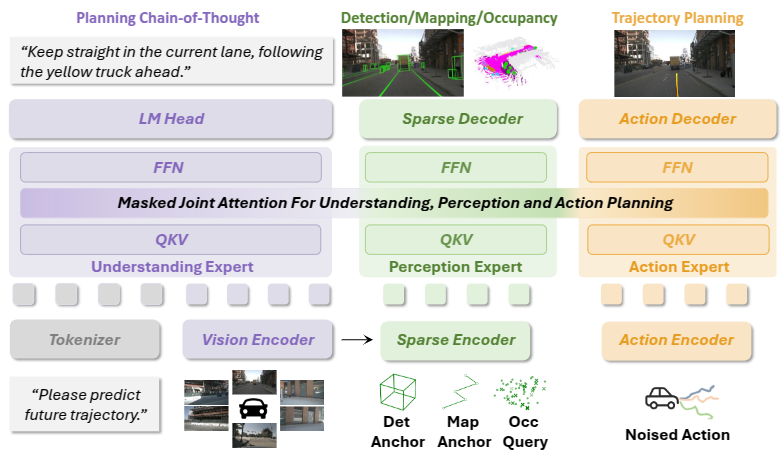
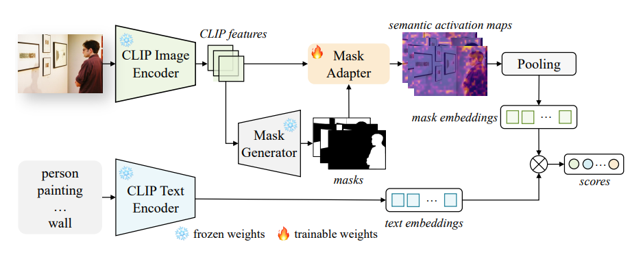
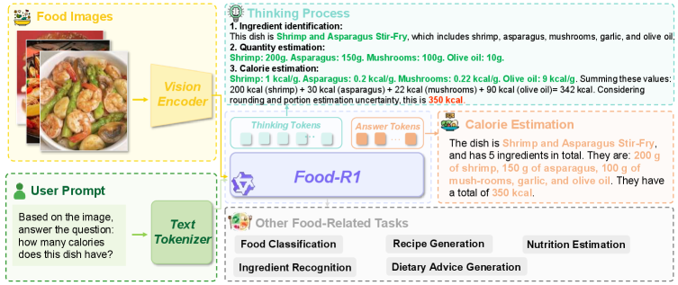
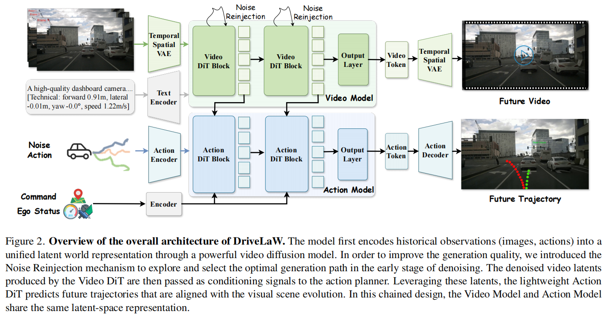
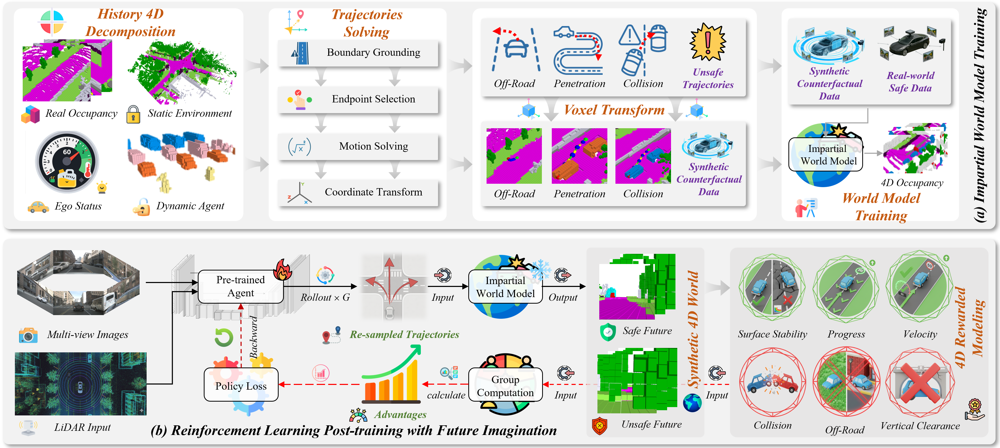
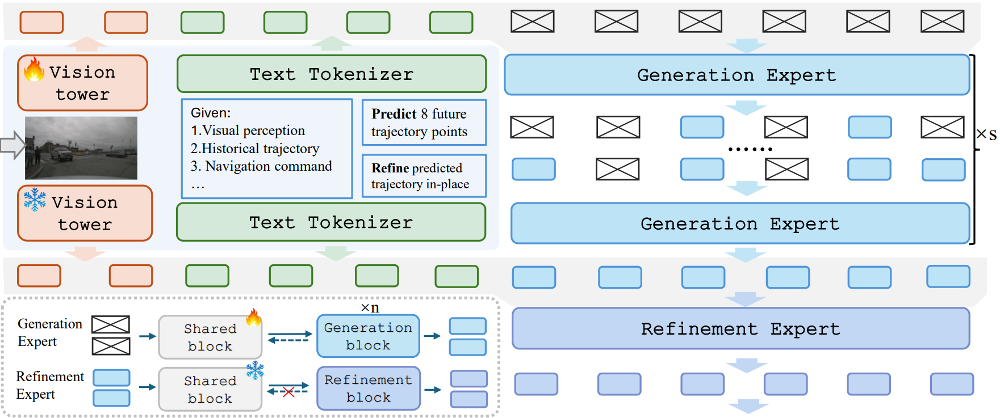

I am a Master’s student at Huazhong University of Science and Technology, advised by Prof. Xinggang Wang and Prof. Wenyu Liu. I work with the HUST Vision Lab on Physical AI.
My research explores how intelligent systems can ground perception, reasoning, and action in the physical world. I am particularly interested in developing generalizable models for embodied and driving scenarios, where agents must understand dynamic environments, reason over spatial-temporal context, and make robust decisions under open-world uncertainty.
News
- 2026.04: We released UniDriveVLA on arXiv, a unified VLA framework for autonomous driving.
- 2026.06: One paper was accepted to the European Conference on Computer Vision (ECCV 2026).
- 2026.02: Two papers were accepted to the IEEE/CVF Conference on Computer Vision and Pattern Recognition (CVPR 2026).
- 2026.01: ReCogDrive was accepted to the International Conference on Learning Representations (ICLR 2026).
- 2025.02: One paper on open-vocabulary segmentation was accepted to the IEEE/CVF Conference on Computer Vision and Pattern Recognition (CVPR 2025).
Publications

UniDriveVLA: Unifying Understanding, Perception, and Action Planning for Autonomous Driving
Yongkang Li, Lijun Zhou, Sixu Yan, Bencheng Liao, Tianyi Yan, Kaixin Xiong, Long Chen, Hongwei Xie, Bing Wang, Guang Chen, Hangjun Ye, Wenyu Liu, Haiyang Sun, Xinggang Wang
arXiv preprint, 2026
Unified driving VLA model that decouples understanding, perception, and action planning with a Mixture-of-Transformers architecture.


ReCogDrive: A Reinforced Cognitive Framework for End-to-End Autonomous Driving
Yongkang Li*, Kaixin Xiong*, Xiangyu Guo, Fang Li, Sixu Yan, Gangwei Xu, Lijun Zhou, Long Chen, Haiyang Sun, Bing Wang, Guang Chen, Hangjun Ye, Wenyu Liu, Xinggang Wang (* denotes equal contribution)
International Conference on Learning Representations, 2026
Reinforced cognitive framework that aligns VLM-based driving understanding with diffusion planning and reinforcement learning.
Paper | OpenReview | Project |


Mask-Adapter: The Devil is in the Masks for Open-Vocabulary Segmentation
Yongkang Li*, Tianheng Cheng*, Bin Feng, Wenyu Liu, Xinggang Wang (* denotes equal contribution)
IEEE/CVF Conference on Computer Vision and Pattern Recognition, 2025
Plug-and-play mask adaptation method for improving open-vocabulary segmentation by better aligning proposal masks with vision-language features.
Paper |

Rank 1st in Open Vocabulary Segmentation on ADE20K-150 with mIoU=38.2

Food-R1: A Unified Multi-Task Food Vision-Language Model with Reinforcement Learning
Yu Zhu*, Yongkang Li*, Wenjie Zhu, Haoyi Jiang, Wenyu Liu, Wei Yang, Bin Li, Xinggang Wang (* denotes equal contribution)
arXiv preprint, 2026
Unified food vision-language model trained with multi-task learning, chain-of-thought distillation, and reinforcement fine-tuning for food analysis and calorie reasoning.

DriveLaW: Unifying Planning and Video Generation in a Latent Driving World
Tianze Xia*, Yongkang Li*, Lijun Zhou*, Jingfeng Yao, Kaixin Xiong, Haiyang Sun, Bing Wang, Kun Ma, Guang Chen, Hangjun Ye, Wenyu Liu, Xinggang Wang (* denotes equal contribution)
IEEE/CVF Conference on Computer Vision and Pattern Recognition, 2026
Latent driving world model that unifies future video generation and trajectory planning through shared world representations.

AD-R1: Closed-Loop Reinforcement Learning for End-to-End Autonomous Driving with Impartial World Models
Tianyi Yan, Tao Tang, Xingtai Gui, Yongkang Li, Jiasen Zheng, Weiyao Huang, Lingdong Kong, Wencheng Han, Xia Zhou, Xueyang Zhang, Yifei Zhan, Kun Zhan, Cheng-zhong Xu, Jianbing Shen
IEEE/CVF Conference on Computer Vision and Pattern Recognition Findings, 2026
Closed-loop reinforcement learning framework that trains an impartial world model to imagine unsafe outcomes and improve autonomous driving policy robustness.

DriveFine: Refining-Augmented Masked Diffusion VLA for Precise and Robust Driving
Chenxu Dang, Sining Ang, Yongkang Li, Haochen Tian, Jie Wang, Guang Li, Hangjun Ye, Jie Ma, Long Chen, Yan Wang
European Conference on Computer Vision, 2026
Masked diffusion VLA with refinement experts and hybrid reinforcement learning for precise, robust autonomous driving trajectories.
Honors and Awards
- 2025.06, Outstanding Graduate of Huazhong University of Science and Technology
- 2024.09, Huazhong University of Science and Technology Excellence in Learning Scholarship, Science and Technology Innovation Scholarship
- 2024.09, China National Scholarship
- 2024.06, MindSpore Open-Source Outstanding Intern
- 2024.05, Huawei ICT Competition Global Final, Grand Prize
- 2024.05, Ascend Excellent Developer - Best Contribution Award
- 2024.03, Huawei ICT Competition National First Prize
- 2023.11, Ascend AI Innovation Competition, Silver Prize
- 2022.10, WeiPai Seed Cup Champion, Huazhong University of Science and Technology
Education
- 2025.09 - Present, Master’s degree, Huazhong University of Science and Technology, Wuhan, China, advised by Prof. Xinggang Wang and Prof. Wenyu Liu
- 2021.09 - 2025.06, Bachelor, Communication and Information Engineering for Exemplary Engineer Education, Huazhong University of Science and Technology, Wuhan, China
Internships
- 2026.04 - Present, Research Intern, ByteDance Seed, China.
- 2024.12 - 2026.04, Research Intern, Xiaomi EV, China.
- 2024.01 - 2024.06, Research Intern (Remote), MindSpore, China.